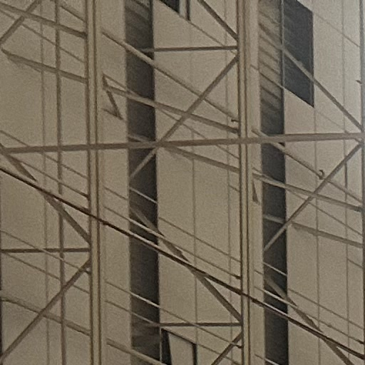

AGU 2025
Poster Presentation · New Orleans, Louisiana

In December 2025, I attended the American Geophysical Union (AGU) Fall Meeting in New Orleans to present my research on automating the detection of Arctic landfast sea ice edges. The poster focused on sharing the U-Net deep learning model I trained to automatically delineate the landfast ice edge in highly variable Sentinel-2 optical imagery.
Topic: Automated Landfast Ice Edge Detection
Methods: U-Net deep learning model, Sentinel-2 optical imagery, coastal mapping
Presenting the U-Net Model
Detecting the landfast ice edge is a critical task for understanding coastal Arctic dynamics, climate change impacts, and accessibility for local communities who rely on the ice for hunting and travel. My work leverages machine learning to streamline this process, effectively training a U-Net model to handle the complexities of optical satellite imagery, including cloud cover, shadows, and varying ice textures.


Conference Takeaways
Sharing this work at AGU was an incredible opportunity to connect with other scientists working at the intersection of modeling, remote sensing, and Arctic climate change. The feedback forms an important part of refining the model to make it more robust across different Arctic regions and seasons.